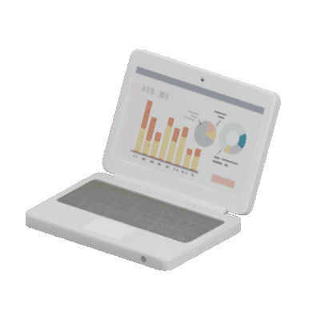


01 / PERSONAL PROJECT · IN PROGRESS
My Linux setup.
CachyOSNiriLocal LLMsLazyVIM
Too spooked to modify daemons... (yet)
What color scheme...
Terminal: Ghostty? Kitty? TBD

PROJECTS
A few things I’m building, tinkering with, and figuring out along the way.
01 / PERSONAL PROJECT · IN PROGRESS
Too spooked to modify daemons... (yet)
What color scheme...
Terminal: Ghostty? Kitty? TBD

02 / PERSONAL PROJECT · IN DEVELOPMENT

A dream crossover (for me at least) of UNO (with house rules ofc) x Pokemon TCG.
Inspiration!
Physical Card Game Prototype Made · Video game version still in development
Small, finished projects
MORE TO COME